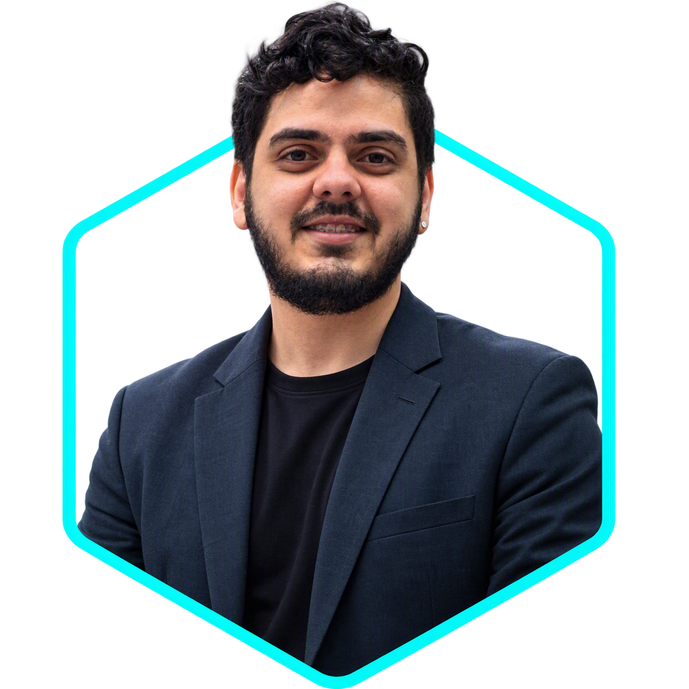

ARQUITETURA · BIM · SOFTWARE
Olá, eu sou
Jansen Rabelo.
Arquiteto e Especialista BIM dedicado a transformar informação, processos e ambientes complexos em soluções digitais claras.
SOBRE MIM
Entre o espaço construído e o código.
Sou arquiteto, especialista em BIM e entusiasta da programação. Uno visão espacial, organização da informação e desenvolvimento de software para resolver problemas reais de projetos e operações.
Minha trajetória passa por modelagem, automação, gestão BIM, construção digital, gêmeos digitais e infraestrutura inteligente. Também curso Ciência da Computação para ampliar essa integração.
ArquiteturaBIMAutomaçãoDadosSoftware
Conhecer minha trajetória →